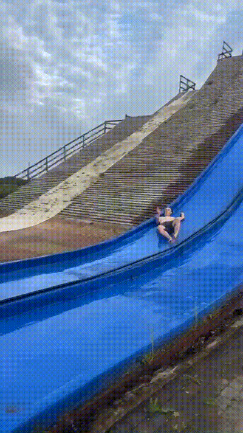
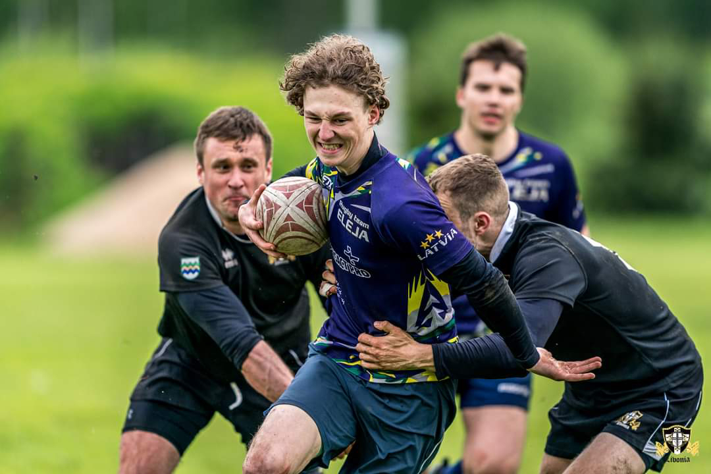

About my hobby
Rugby and scouting are two of my greatest hobbies. Rugby isn't just a game, it's a community where I've found many friends and shared adventures. Scouting provides a valuable opportunity to be in nature and learn practical skills. These hobbies are very important to me and bring me a lot of joy and challenges.
Rugby
Rugby is a sport with a deep history and traditions. It's fast-paced and physical, requiring both endurance and strategic thinking. I love the game of rugby for its dynamism and teamwork. Every rugby match is like a new adventure, full of fun and adrenaline.
Skauts
Scouting to me is like a journey into the world of adventure and learning. I've learned many practical skills, from fire safety to knot tying. But what I love most about scouting is that it teaches respect for nature and others, as well as promoting personal growth and independence.